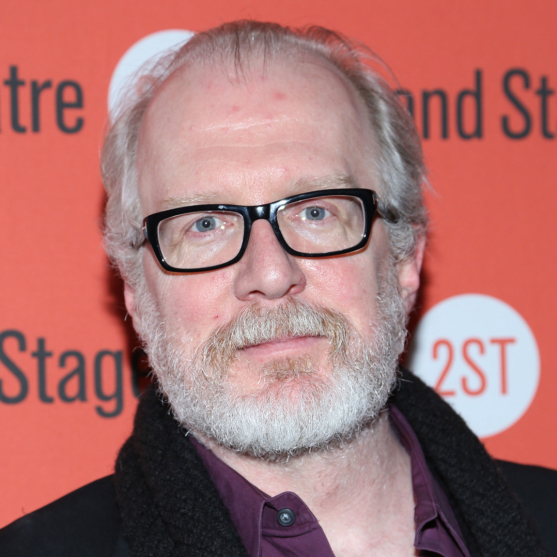

Princess Twin
Mon, Mar 5 - 4:45 pm
Tue, Mar 6 - 4:45 pm
Wed, Mar 7 - 4:45 pm
Select showtimes to buy
advanced screening tickets.
Running Time: 94 min.
Country(ies): USA
Year: 2017
Rated: 14A
Lady Bird (2017)
Nominated for 5 Oscars, including Best Picture, Best Director, Best Actress, Best Supporting Actress.
 Tracy Letts Lucas Hedges Timothée Chalamet
"Her name is Christine, but she calls herself Lady Bird (Saoirse Ronan), and she would prefer that friends, relatives and acquaintances do the same. And the name fits: A resident of one of the drearier neighborhoods of Sacramento, she’s more than ready to fly.
"But before she can make it to her preferred destination — a college in New York, maybe even a good one — Lady Bird will have to graduate from high school and survive all the drama that her senior year entails. She’ll also have to restrain herself from killing her mother, Marion (Laurie Metcalf), who probably loves her but who doesn’t seem to like anything about her.
"Fortunately, Lady Bird’s father, Larry (Tracy Letts), is a lot more understanding. Unfortunately, he’s also unemployed — which goes a long way toward explaining Marion’s seemingly interminable bad mood.
"As Lady Bird waits to find out whether post-9/11 paranoia will help her chances of escaping to New York, she explores relationships with a couple of boys: Danny (Lucas Hedges), who’s into theater, and Kyle (Timothée Chalamet), who’s into, well, himself.
"But what if she succeeds in leaving Sacramento behind? Can she really know what she wants if she’s not entirely sure who she is?
"Lady Bird is the solo directorial debut of Greta Gerwig. Working from her own screenplay, Gerwig delivers a comedy-drama that transcends genre categories. It’s simply one of the best films of the year — an experience at once joyful, heartbreaking and hilarious." - St. Louis Post-Dispatch